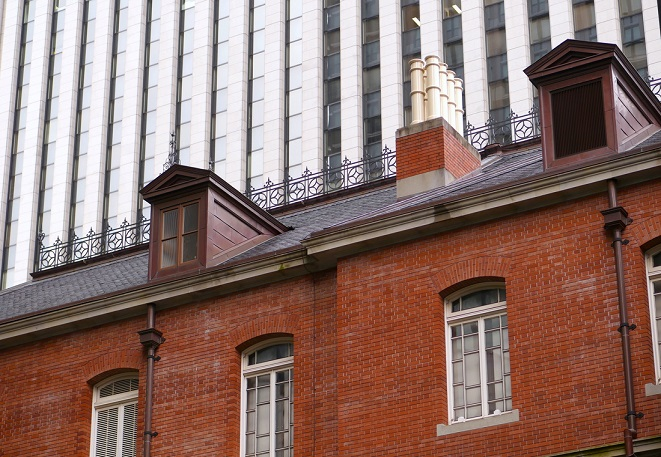
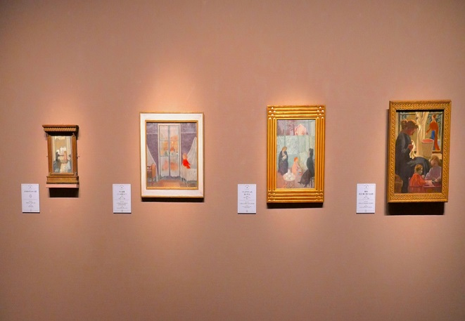
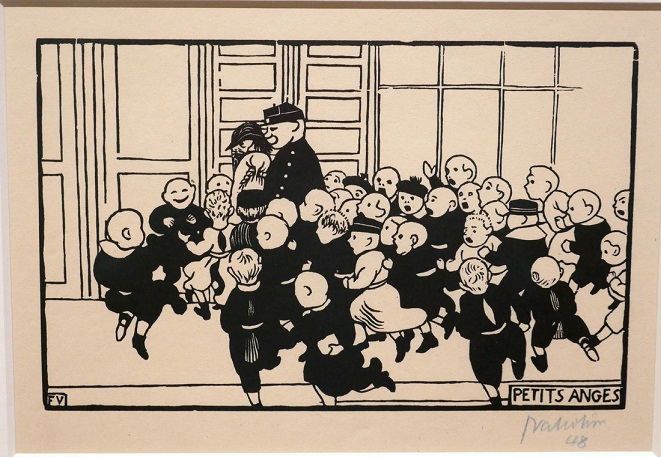
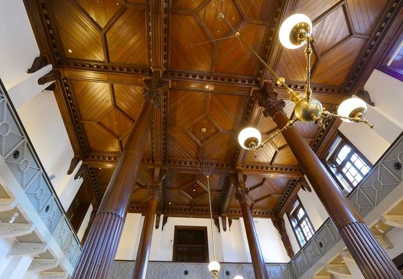

미츠비시 1호 박물관
1984년 미츠비시가 이 장소에 '미츠비시 1호관'을 건설했다. 초반엔 오피스 건물로 활용되었지만 다시 같은 디자인을 갖춘 형태로 복원 후 근대 미술 기획전이 19세기 후반부터 20세기 전반의 근대 미술 기획전이 매년 3회 개최되는 미술관이 되었다.
최근 개관 10 주년을 맞이해 19세기 말 파리의 전위 예술가 그룹 '나비 파'에 의한 어린이의 미술전이 열렸다. 현실에서 볼 수 있는 색상 대신에 마음으로 느낀 색으로 그린 것이 특징이다. 또한 고흐, 보나르, 뷔야르, 드니 등의 유명한 유화, 판화 등 약 100 점을 감상할 수 있다.


어린이 전시회 땐 모두 어린이를 대상으로 한 그림들로 초상화와 아이들이 놀고 있는 모습을 담은 작품 등 상황과 그리는 방식이 모두 다양한 작품들을 감상할 수 있는 것이 특징이다.
또한 단순한 그림 작품 전시의 기능 뿐 아니라 미술 작품을 살리는 공간의 구성이 미츠비시 1호관 미술관의 큰 매력이다. 미술품 감상 이외에도 클래식한 우디 인테리어의 카페가 있어 디저트나 음료를 즐길 수 있다.
